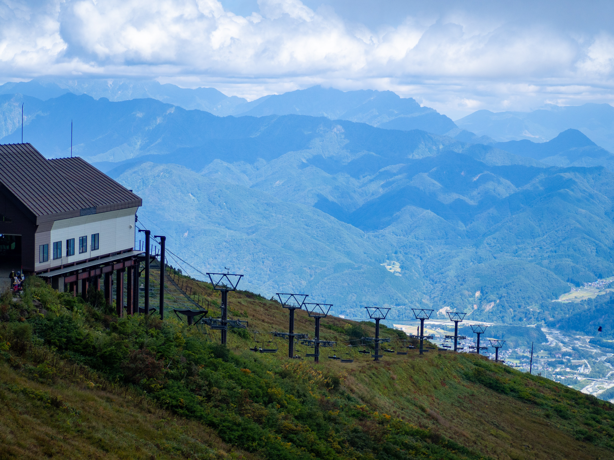
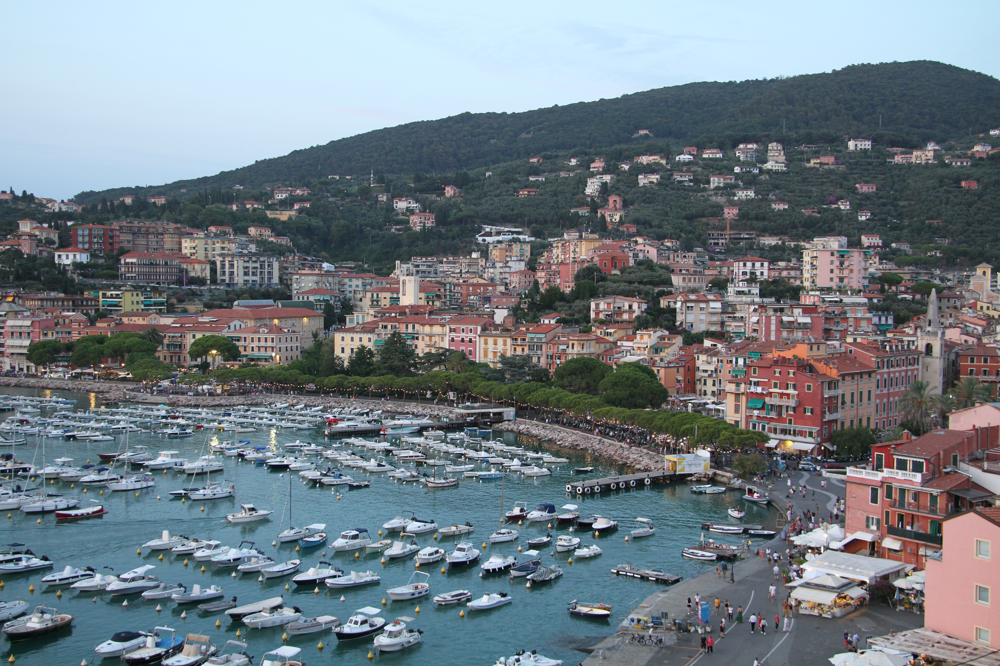
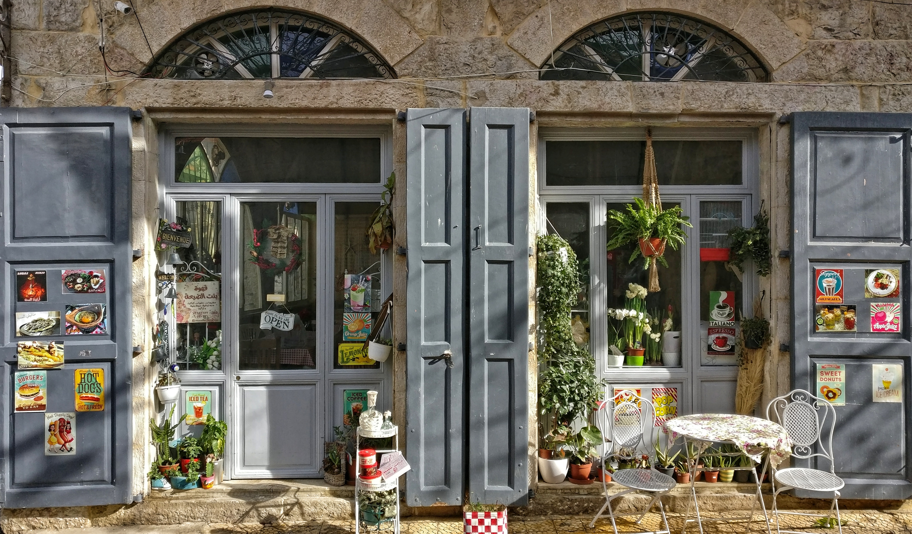
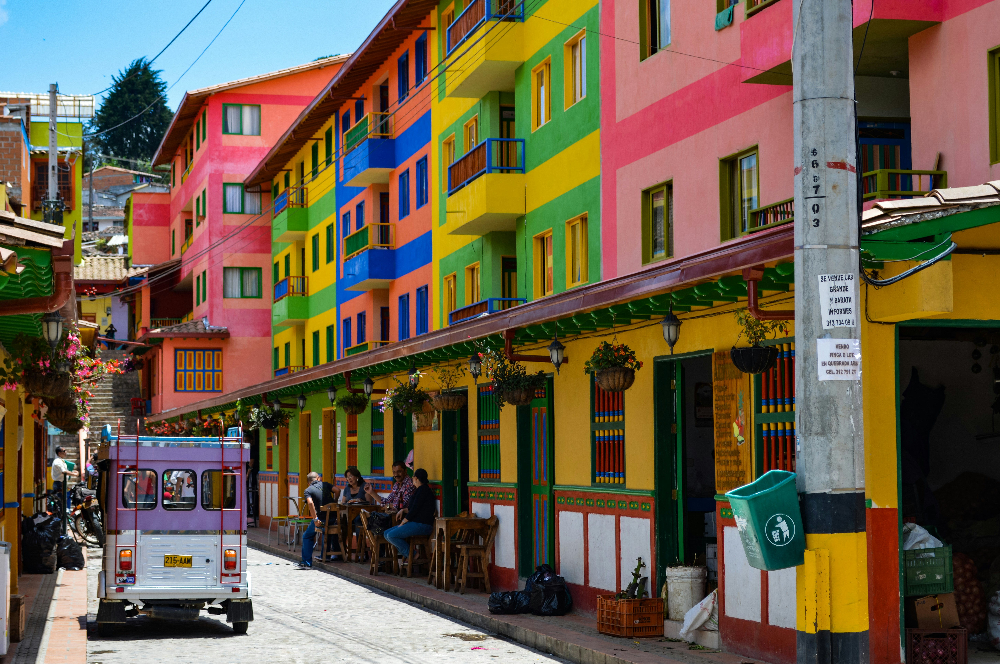

Tahun ini 54 desa di dunia terpilih sebagai desa terbaik untuk wisata, berdasarkan beberapa kriteria. Salah satunya tentang keberlanjutan.
Badan Perserikatan Bangsa-Bangsa yang mempromosikan pariwisata dunia (UNWTO) baru saja mengeluarkan 54 desa terpilih yang bisa dijadikan destinasi wisata Anda. Desa-desa itu dipilih berdasarkan sembilan kriteria, termasuk seberapa baik desa tersebut melestarikan (dan menampilkan) lingkungan alamnya, komitmennya terhadap kelestarian ekonomi dan lingkungan, serta konservasi warisan budaya.
Selama tiga tahun terakhir, UNWTO telah memberikan penghargaan kepada desa-desa di seluruh dunia yang “memimpin dalam memelihara daerah pedesaan dan melestarikan bentang alam, keanekaragaman budaya, nilai-nilai lokal dan tradisi kuliner”.
Hakuba, Jepang
Dua puluh tahun lalu, Tony Anderson dari Melbourne, Australia, datang ke Hakuba untuk bermain snowboard. Desa itu terletak di puncak pegunungan Jepang, sekitar 45 kilometer sebelah barat Nagano. Pada tahun berikutnya Anderson kembali ke desa itu untuk membeli properti. Sejak saat itu, dia tinggal di sana.Sebagai seorang pengusaha hotel, Anderson mengatakan keramahtamahan di Hakuba bahkan bisa dirasakan oleh para pendatang.
Ketika dia mengunjungi Hakuba sebagai wisatawan, dia pergi ke satu hotel, tapi ternyata hotel itu sudah penuh. Alih-alih diminta mencari tempat lain, Anderson malah dipersilakan meletakkan kasur di lorong. Bahkan sampai saat ini, katanya, "Kebijakannya adalah jangan pernah menolak siapa pun. Semua orang diterima." Tradisi keramahtamahan ini kemungkinan besar juga berkembang karena alasan praktis: ketika salju turun, terkadang menghalangi jalan, Anda tidak bisa serta merta pergi, meskipun Anda menginginkannya. Tentu saja, hal ini menjadikan pengalaman bermain ski dan boarding di Hakuba yang luar biasa.
Hakuba, yang dikelilingi oleh 10 resor ski berbeda, menjadi tuan rumah banyak acara Olimpiade Musim Dingin Nagano tahun 1998. Bahkan di musim semi, saat bunga sakura bermekaran, salju di pegunungan masih cukup untuk bermain ski. Meskipun Hakuba terkenal dengan musim dinginnya, tempat ini layak dikunjungi sepanjang tahun, kata Anderson. Di musim panas, dia suka mendaki gunung menuju penginapan. Di musim gugur, tempat ini populer di kalangan pengunjung yang ingin melihat dedaunan musim gugur. Dan onsen sumber air panas di Hakuba tetap populer di musim apa pun. “Tidak ada satu hari yang saya lewatkan tanpa melihat ke arah pegunungan dan saya sangat mengagumi keindahan tempat ini,” kata Anderson.
Lerici, Italia
Bagi wisatawan yang mencari pemandangan laut yang menakjubkan, pantai yang bersih, dan rumah yang penuh warna, ada destinasi lain yang dapat ditambahkan ke dalam daftar, Cinque Terre. Terletak di pesisir barat laut Italia, 100 kilometer selatan Genoa (atau 10 kilometer selatan La Spezia, pusat perjalanan populer untuk mencapai Cinque Terre), keindahan Desa Lerici bukanlah rahasia lagi.
Namun, karena tidak adanya stasiun kereta api, kota ini lebih terlindungi dari pariwisata yang berlebihan dibandingkan banyak negara tetangganya. Dijuluki sebagai ibu kota "Teluk Penyair", kota ini menjadi tuan rumah berbagai festival budaya dan seni, seperti Festival Musik Lerici, kompetisi sastra Premio Lerici Pea Golfo dei Poeti, dan pameran seni reguler, termasuk di kastil abad pertengahannya
“Selama berabad-abad, Lerici telah menyongsong nama-nama besar di bidang budaya, sastra, dan seni yang telah memilihnya sebagai tempat inspirasi,” kata Wali Kota Lerici Leonardo Paoletti, termasuk penyair Percy Bysshe Shelly, novelis Virginia Woolf, serta penulis dan sutradara Pier Paolo Pasolini. “Sekarang, warisan -warisan ini masih ada.”
Tidak seperti banyak daerah pesisir Italia lainnya, Lerici juga mempertahankan industri perikanan tradisionalnya. “Lerici memiliki budidaya kerang tertua di Italia, yang berasal dari abad ke-19,” kata Paoletti. Namun, penduduk setempat menyadari bahwa penangkapan ikan saat ini harus keberlanjutannya. Selama lebih dari 25 tahun, kata Paoletti, Lerici telah “meninggalkan” penangkapan ikan secara intensif. Di antara berbagai inisiatif keberlanjutan, kota ini menjalankan proyek percontohan yang disebut Smart Bay, yang mencakup penelitian ilmiah dan pemantauan teluk dan ekosistemnya. Pemerintah juga memperkenalkan panel surya, melarang penggunaan plastik sekali pakai, dan melarang merokok di wilayah pesisir. Apa tujuan utamanya? Seperti yang dikatakan oleh UNWTO, desa ini akan menjadi destinasi "yang tidak hanya memesona dengan keindahan alamnya, tetapi juga menjadi model keberhasilan lingkungan"
Lephis, Etiopia

Untuk keindahan alam dan satwa liar, sulit mengalahkan desa Lephis yang terletak di Hutan Lephis, sekitar 160 kilometer selatan ibu kota Ethiopia, Addis Ababa. Wisatawan dapat melakukan perjalanan atau menunggang kuda melewati Air Terjun Lephis yang menakjubkan, melewati perbukitan dan lembah, melihat sekilas binatang seperti monyet colobus, macan tutul, dan nyala gunung. Para pencinta burung akan mendapatkan suguhan istimewa karena bisa menemukan spesies Oriole Abyssian dan turaco pipi putih.
“Saya sering ke sana bersama para wisatawan untuk melihat fauna dan flora,” kata Biruk Chiksa, pemandu wisata di Venture Ethiopia Tour and Travel. "Saya sangat menyukainya." Dan seperti yang dikatakan Chiksa, para wisatawan asing pun demikian.
Hutan ini juga merupakan tempat tinggal bagi sekitar 2.000 rumah tangga. Banyak di antaranya kini didukung oleh Desa Ekowisata Lephis sebuah inisiatif berbasis masyarakat untuk melestarikan warisan lokal dan membantu masyarakat, sekaligus mendorong pariwisata. Pengunjung dapat melihat kerajinan tangan seperti perhiasan manik-manik dan ukiran kayu yang dibuat dari rumput dan bambu lokal, berkat Asosiasi Kerajinan Mishike di desa tersebut, yang mempekerjakan sekitar 17 perempuan dan tiga laki-laki.
Douma, Lebanon
Desa Douma, yang terletak sekitar 80 kilometer timur laut Beirut, sungguh indah. Di desa ini, Anda bisa menemukan rumah-rumah yang dibangun dengan batu tradisional, genting merah, dengan pemandangan Pegunungan Batroun, gereja-gereja berusia berabad-abad, dan pasar yang baru saja dipugar. “Kesan pertama saya adalah keindahan desanya,” kata Rana Tanissa, seorang arkeolog dan konsultan pariwisata pedesaan Lebanon yang menulis tentang perjalanan ke Lebanon, mengenang kunjungan pertamanya ke kota tersebut.
"Dan sejarah desa ini luar biasa rasanya seperti memasuki buku sejarah." Faktanya, menurut UNWTO, komitmen Douma untuk melestarikan warisan arsitektur dan budayanya serta "menghindari ekspansi perkotaan yang kacau" menjadi poin-poin utama yang membuat Douma masuk ke dalam daftar tahun 2023.
UNWTO mencatat Douma juga melindungi aspek lain dari warisan budayanya, seperti tradisi makanan lokal. Menurut Tanissa, "Raha manis", yang dibuat dengan biskuit, adalah salah satu favoritnya. Begitu pula zaatar, minyak zaitun, keju, dan selai kota tersebut. Bahan-bahannya berasal dari pertanian dan kebun anggur lokal.
Meski begitu, Douma bukan hanya soal tradisi. Desa ini juga telah melakukan sejumlah inisiatif ramah lingkungan, termasuk menggunakan 600 panel surya untuk menghasilkan listrik bagi desa, menanam pohon, dan mendorong pembuatan kompos. Namun, lebih dari sekedar keindahan, warisan budaya, makanan atau bahkan keberlanjutannya, kata Tanissa, ada kualitas lain yang langsung menarik perhatiannya tentang desa ini, yaitu kebaikan masyarakatnya.
“Misalnya, jika seseorang meminta informasi, mereka tidak hanya akan membantu, tetapi juga mengantarkan orang tersebut keliling desa.” Untuk memaksimalkan masa tinggalnya di Douma (dan mengenal penduduk setempat), Tanissa menyarankan untuk menginap di salah satu wisma desa, tempat keluarga setempat membuat makanan tradisional.
Zapatoca, Colombia
Enam tahun lalu, setelah menghabiskan tiga dekade bekerja sebagai guru di sebuah wilayah di Kolombia, Guillermo Rincón Velandia memutuskan untuk meluncurkan perusahaan tur Colombia Trails SAS di kota asalnya Zapatoca. Alasannya banyak, katanya, dan alasan tersebut sejalan dengan alasan UNWTO mencantumkan Zapatoca sebagai salah satu desa wisata terbaik tahun 2023.
Pertama, pemandangan alam. Terletak di dataran tinggi antara tiga ngarai sekitar 1.700 meter di atas permukaan laut, Zapatoca memiliki “warisan geologi yang kaya dan unik,” kata Velandia, termasuk beberapa fosil laut tertua di dunia.Keberagaman lanskapnya juga menonjol, dengan gua bawah tanah kuno, hutan tropis, dan pegunungan untuk didaki dan dijelajahi.
Iklimnya sangat stabil, dengan suhu tetap sekitar 20 derajat Celsius sepanjang tahun, sehingga penduduk setempat menyebutnya "Desa dengan Iklim Seperti Sutra". Warisan budaya kota ini juga terkenal, mulai dari rumah-rumah abad ke-18 yang bercat putih dengan atap terakota, yang memadukan gaya Republik dan kolonial, hingga arsitektur dan sejarah religiusnya (kota ini dijuluki "Kota Lewi" karena banyaknya kapel dan gerejanya).
Khususnya bagi pencinta musik, kota ini memiliki lebih banyak hal untuk ditawarkan. Festival yang merayakan musik dan tarian berlangsung sepanjang tahun, termasuk Festival Tari Internasional, Festival Tari Nasional "Aires de mi Tierra", Festival Paduan Suara Internasional Gustavo Gómez Ardila, dan Festival Lonceng. “Zapatoca adalah kota yang menjaga kesenian tetap hidup,” kata Velandia.